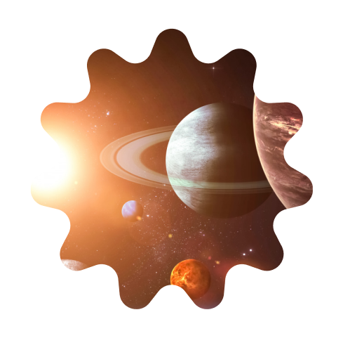

<section class="points">
  <div class="container">
    <p class="points__subtitle">Основные этапы</p>
    <h2 class="points__title">Порядок работы</h2>
    <div class="points__swiper">
    <div class="points__wrapper">
      <div class="points__item">
        
        <h3 class="points__heading">Полный <span class="points__span">аудит сайта</span></h3>
        <p class="points__text">Во время аудита сайта проводится анализ сильных и слабых сторон, подбор конкурентов, занимающих лидирующие
          позиции в поисковой выдаче в тематике.</p>
      </div>
      <div class="points__item">
        
        <h3 class="points__heading">Сбор семантического ядра и  <span class="points__span">коррекция структуры</span> сайта</h3>
        <p class="points__text">Во время аудита сайта проводится анализ сильных и слабых сторон, подбор конкурентов,
          занимающих лидирующие
          позиции в поисковой выдаче в тематике.</p>
      </div>
      <div class="points__item">
        
        <h3 class="points__heading"><span class="points__span">Создание</span> уникального <span
          class="points__span">контента</span></h3>
        <p class="points__text">Текстовая оптимизация и коррекция/оптимизация товарных и каталожных страниц в
          соответствии с запросами из семантического ядра.</p>
        <p class="points__text">Помимо этого мы проанализируем ваш сайт на соответствие коммерческих факторов, внедрим
          системы аналитики, проведем аудит ссылочной массы сайта и проработаем техническое задание по оптимизации UI/UX
          и не только.</p>
      </div>
    </div>
    <div class="swiper-pagination"></div>
    </div>
  </div>
</section>